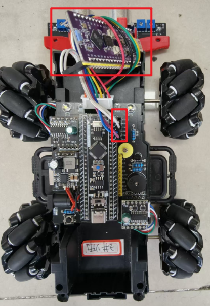
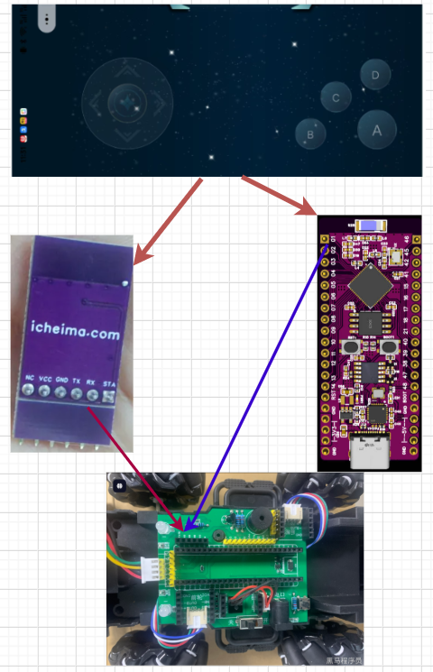

<!DOCTYPE lake>
<p data-lake-id="uf0e73e61" id="uf0e73e61" style="text-align: center"><br/></p><p data-lake-id="u43f8f92a" id="u43f8f92a" style="text-align: center"></p><p data-lake-id="u91b69b4d" id="u91b69b4d"><span data-lake-id="u0457aca6" id="u0457aca6">参考STC8小车：</span><a data-lake-id="u39c114ab" href="../../STC8%E5%A2%9E%E5%BC%BA%E5%9E%8B%E5%8D%95%E7%89%87%E6%9C%BA%E5%BC%80%E5%8F%91/%E9%BA%A6%E5%85%8B%E7%BA%B3%E5%A7%86%E8%BD%AE%E5%B0%8F%E8%BD%A6/%E9%BA%A6%E5%85%8B%E7%BA%B3%E5%A7%86%E8%BD%AE%E5%B0%8F%E8%BD%A6.html" id="u39c114ab" target="_blank"><span data-lake-id="ufc8066d5" id="ufc8066d5">https://www.yuque.com/icheima/stc8h/migh1misr3o10yp9</span></a></p><p data-lake-id="uf85ea260" id="uf85ea260"><span data-lake-id="u70aa3814" id="u70aa3814">在之前的课程中，我们已经实现了麦克纳姆轮小车。在本案例中，我们只需要用我们的ESP32模块，替换掉之前的小车上面的蓝牙模块即可实现相应的功能。</span></p><p data-lake-id="ue0f957d4" id="ue0f957d4"><span data-lake-id="ued8c95c8" id="ued8c95c8">按照如下流程图所示：</span></p><p data-lake-id="u13bfc3aa" id="u13bfc3aa" style="text-align: center"></p><h2 data-lake-id="a8OpL" id="a8OpL"><span data-lake-id="u84846eb9" id="u84846eb9">实现步骤</span></h2><h3 data-lake-id="pAl6k" data-lake-index-type="2" id="pAl6k"><span data-lake-id="u0388218d" id="u0388218d">蓝牙部分</span></h3><h4 data-lake-id="v3xkT" data-lake-index-type="2" id="v3xkT"><span data-lake-id="u31e3d94c" id="u31e3d94c">初始化蓝牙</span></h4><span class="yuque-card-unsupported">[codeblock]</span><h4 data-lake-id="qngA7" data-lake-index-type="2" id="qngA7"><span data-lake-id="ufdfc2a8a" id="ufdfc2a8a">初始化GAP协议</span></h4><span class="yuque-card-unsupported">[codeblock]</span><h4 data-lake-id="NdK5r" data-lake-index-type="2" id="NdK5r"><span data-lake-id="u49cfb255" id="u49cfb255">初始化服务和特性</span></h4><span class="yuque-card-unsupported">[codeblock]</span><h4 data-lake-id="curNZ" data-lake-index-type="2" id="curNZ"><span data-lake-id="u3faa67fd" id="u3faa67fd">发送蓝牙广播</span></h4><span class="yuque-card-unsupported">[codeblock]</span><h4 data-lake-id="Q9NyK" data-lake-index-type="2" id="Q9NyK"><span data-lake-id="u635a7c5f" id="u635a7c5f">实现蓝牙中断处理函数</span></h4><span class="yuque-card-unsupported">[codeblock]</span><h3 data-lake-id="eqmdY" data-lake-index-type="2" id="eqmdY"><span data-lake-id="u1690d65c" id="u1690d65c">串口部分</span></h3><h4 data-lake-id="L5A4V" data-lake-index-type="2" id="L5A4V"><span data-lake-id="u0e6b87ca" id="u0e6b87ca">串口初始化</span></h4><p data-lake-id="uebd24f81" id="uebd24f81"><span data-lake-id="u3ba46818" id="u3ba46818">将ESP32的2号脚接到小车上面的TXD引脚，rx引脚接到小车上面的RXD引脚</span></p><span class="yuque-card-unsupported">[codeblock]</span><h4 data-lake-id="lMmIO" data-lake-index-type="2" id="lMmIO"><span data-lake-id="uca6511c6" id="uca6511c6">转发蓝牙数据</span></h4><p data-lake-id="u735c45a9" id="u735c45a9"><span data-lake-id="ue3813f8c" id="ue3813f8c">蓝牙接收到了什么数据，我们就通过串口把它发出去</span></p><span class="yuque-card-unsupported">[codeblock]</span><p data-lake-id="uc3d89275" id="uc3d89275" style="text-align: center"><br/></p><h3 data-lake-id="djKV7" data-lake-index-type="2" id="djKV7"><span data-lake-id="u2310a271" id="u2310a271">测试功能</span></h3><ol list="u8b5ccb42"><li data-lake-id="u22824f75" fid="u8f71cab1" id="u22824f75"><span data-lake-id="u88784608" id="u88784608">打开创趣蓝牙</span></li></ol><ul list="u3ea25205"><li data-lake-id="u11c805b7" fid="u26d06ee4" id="u11c805b7"><span data-lake-id="u9d5b65c8" id="u9d5b65c8">创趣蓝牙会发送如下数据帧：</span></li></ul><span class="yuque-card-unsupported">[codeblock]</span><ol list="u8b5ccb42" start="2"><li data-lake-id="u4ac1f5aa" fid="u8f71cab1" id="u4ac1f5aa"><span data-lake-id="uc0221803" id="uc0221803">测试前进后退，左转右转等功能是否正常</span></li></ol>